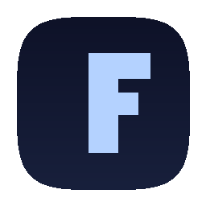
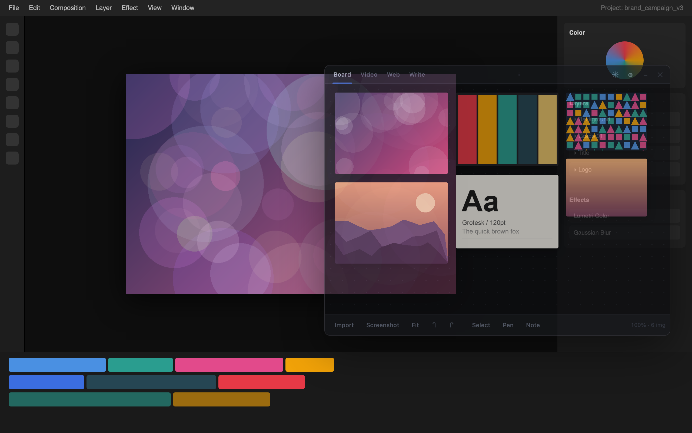

A floating reference board & moodboard that stays always-on-top. The open-source PureRef / ScreenFloat alternative for macOS, Windows & Linux.

FloatPad floating over an editor at 70% opacity. Reference images stay on top of your work, never in the way.
FloatPad keeps your reference material on top of everything else: a frameless overlay that stays above your work, drops to 15% opacity, and can become click-through so it never blocks the app underneath. Instead of alt-tabbing to Finder, YouTube, browser tabs and design files, everything lives in one floating pad: an infinite image board, a video player, a real web browser and a writing pad.
Built with Rust and Tauri (a native core, not Electron), it is fast, tiny and private. It runs entirely on your machine with no account, no analytics and no telemetry.
Infinite canvas for images, annotations, sticky notes and screenshots. Zoom/pan, arrange, crop, flip, grayscale, OCR, undo/redo, and a persistent shot library.
Local files with A-B loop, frame-by-frame stepping, variable speed and grab-frame-to-board. Picture-in-Picture support.
A real browser with bookmarks, reader mode, history and network-level ad & tracker blocking. Send any image straight to the board.
Screenplay-format or Markdown writing pad with live preview, a .md folder workflow, autosave and a focus timer.
Extract text from any image (macOS Vision) and capture any screen region straight onto the board.
Visible on every Space, opacity down to 15%, click-through detach, mini mode, borderless view and standalone panels.
Real footage: FloatPad floating over After Effects while I work. Board, Web and Write modes, opacity dimming, and a tiny memory footprint (Activity Monitor is open on purpose). References stay on top, never in the way.
Looking for a PureRef alternative, ScreenFloat alternative or BeeRef alternative? FloatPad is the all-in-one option: a reference board plus video, web and notes, with OCR and screenshots, in one native open-source app.
| Feature | FloatPad | PureRef | ScreenFloat | BeeRef |
|---|---|---|---|---|
| Open source (MIT) | Yes | No | No | Yes |
| macOS / Windows / Linux | Yes | Yes | macOS only | Yes |
| Reference image board | Yes | Yes | Yes | Yes |
| OCR (image → text) | Yes | No | Yes | No |
| Region screenshots | Yes | No | Yes | No |
| Video player + A-B loop | Yes | No | No | No |
| Web browser + ad block | Yes | No | No | No |
| Markdown / screenplay notes | Yes | No | No | No |
| Native Rust core (~10 MB) | Yes | No | No | No |
Competitor features reflect their public docs at the time of writing; corrections welcome.
Free and open source under the MIT license. Download the latest build for your platform, or build from source with Node.js and Rust.